Um Dock para o Mac com widgets dentro.
O Cais fica no lugar do Dock do macOS. Ao lado dos seus apps entram 67 widgets que abrem em ilhas, um Dock diferente para cada tipo de trabalho e 8 temas.
Pagamento único, no Pix ou no cartão. macOS 14 ou mais novo, Mac com chip Apple.
O Dock no pé desta página é uma demonstração com os widgets do app. Passe o mouse, clique num widget para abrir a ilha e troque de workspace nas abas.
67 widgets, em 88 visuais
Cada widget fica no Dock em até quatro tamanhos, e vários têm mais de um visual. Clique em qualquer um para pôr no Dock aqui embaixo, como na biblioteca do app.
Um clique no widget abre a ilha dele
A ilha flutua acima do Dock com o que não cabe no widget: os timers salvos, os controles da música, o uso de memória e de disco, os tempos do Foco. Ela tem a altura do conteúdo e fecha com outro clique.
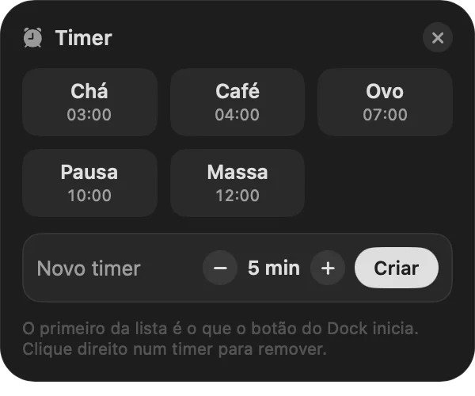
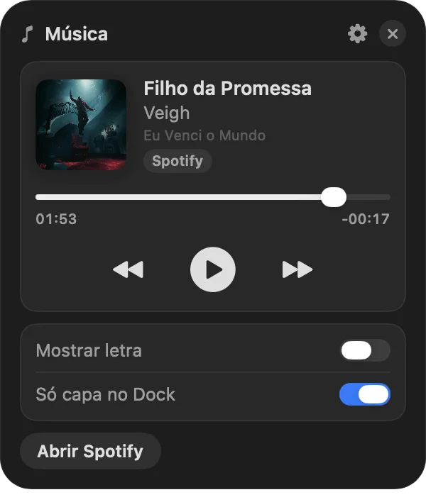
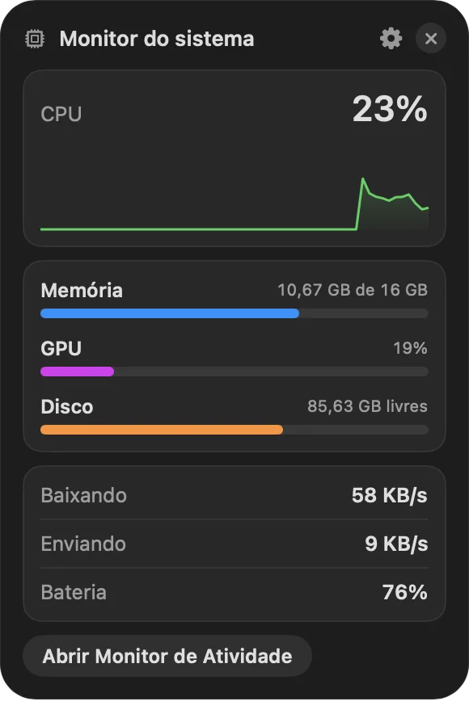
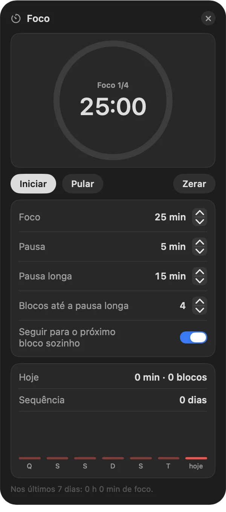
Seu limite do Claude, sem abrir o terminal
Para quem usa o Claude Code: o widget Uso do Claude mostra quanto da janela de 5 horas e da semana já foi.
- Previsão pelo ritmo de agora: em quanto tempo o limite enche e se isso acontece antes de zerar.
- Aviso em 80% e 95% da janela de 5 horas.
- Os números vêm da barra de status do Claude Code, lidos no próprio Mac.

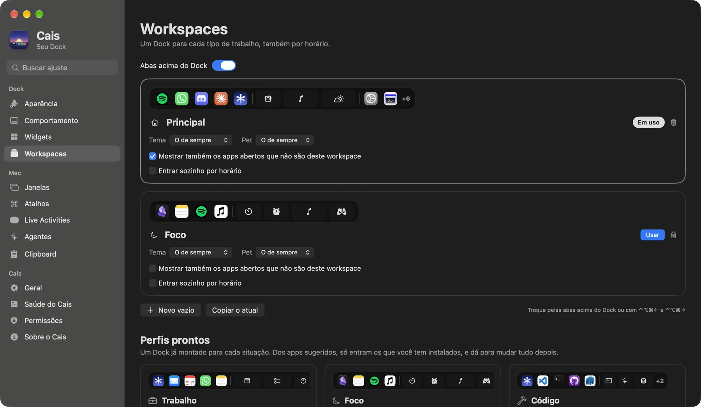
Um Dock para cada tipo de trabalho
Cada workspace guarda os próprios apps e widgets, e pode ter tema próprio.
- 7 perfis prontos, montados só com os apps que você tem instalados:
- Trabalho
- Foco
- Código
- Criação
- Estudo
- Reunião
- Lazer
- Troca pelas abas acima do Dock ou com ⌃⌥⌘← e ⌃⌥⌘→. As abas do Dock desta página fazem essa troca.
- Por horário: um workspace pode entrar sozinho na hora marcada.
8 temas, ou o seu
Estas são capturas do Dock de verdade em cada tema. Há também o Personalizado, com a cor que você escolher.
- Vidro
- Fosco
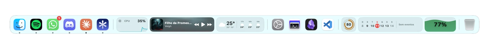
- Vidro claro
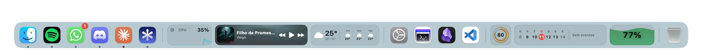
- Meia-noite
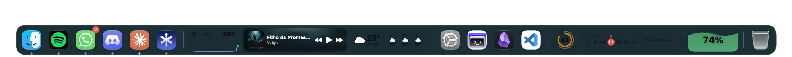
- Cidade à noite
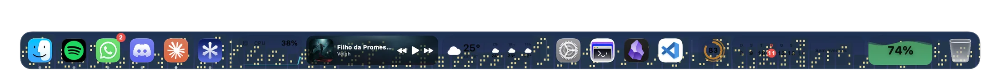
- Chuva neon
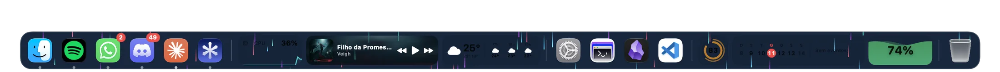
- Neve
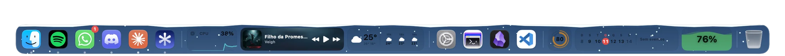
- Pôr do sol
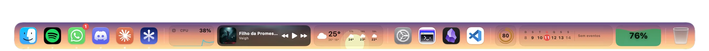
- Cor automática: o Dock e as ilhas pegam a cor do papel de parede ou da capa da música que está tocando.
- Tamanho e ampliação dos ícones ao passar o mouse.
- Posição na tela e em qual monitor o Dock fica.
- Ocultar automaticamente, se você preferir a tela livre.
O que mais vem no Cais
- Busca ⌃⌥Espaço
- Apps, arquivos, widgets e ajustes numa ilha. Também faz conta e converte moeda: digite 100 usd.
- Clipboard ⌃⌘V
- Histórico do que você copia, com busca e categorias.
- Janelas
- As janelas param antes do Dock em vez de ficar atrás dele. Com ⌃⌥⌘T elas se arrumam lado a lado sozinhas.
- Live Activities
- Pílulas que saem do Dock para avisar do que está acontecendo.
- Agentes
- Aviso quando o Claude Code termina uma tarefa ou precisa de você.
- Saúde do Cais
- Uma página que mostra quanto o próprio Cais está gastando do Mac.
- Seus apps de sempre
- O Cais traz os apps e as pastas do Dock do macOS, na mesma ordem.
- Backup
- Os ajustes saem para um arquivo e voltam em outro Mac.
Preço
R$ 49uma vez só, com as atualizações.
Comprar por R$ 49O pagamento é feito na Cakto. O código da compra e o link de instalação chegam no seu e-mail assim que o pagamento é aprovado.
| Pagamento | Pix ou cartão, pela Cakto |
|---|---|
| Entrega | Por e-mail, na hora: código da compra e link de instalação |
| Instalação | Um comando colado no Terminal, ou um arquivo .dmg |
| Atualizações | O Cais procura versão nova sozinho e instala com um clique |
| Reembolso | 7 dias para pedir o dinheiro de volta, direto na Cakto |
| Requisitos | macOS 14 (Sonoma) ou mais novo, em Mac com chip Apple (M1 em diante) |
Perguntas
O Dock do macOS some?
Só se você quiser. Há um ajuste "Esconder o Dock do macOS", e ele volta ao normal quando você sai do Cais.
Funciona em Mac com Intel?
Não. O Cais roda em Macs com chip Apple (M1 em diante), com macOS 14 ou mais novo.
Por que a instalação é pelo Terminal?
O Cais não está na App Store nem passou pela notarização da Apple, que exige uma conta paga de desenvolvedor. Um app assim, baixado pelo navegador, é barrado pelo macOS na primeira abertura. Instalado pelo comando do Terminal ele abre direto. Quem preferir o .dmg precisa liberar o app uma vez em Ajustes do Sistema, Privacidade e Segurança, botão "Abrir Mesmo Assim".
Como chegam as atualizações?
O Cais procura versão nova sozinho. Quando tem, aparece um aviso e um botão "Instalar e reiniciar". O download abre com o código da sua compra, que fica guardado no app.
Que permissões o Cais pede?
Depende dos widgets que você usar: calendário, lembretes, localização para o clima, e assim por diante. Cada uma é pedida só quando o widget precisa, e a página Permissões do app explica o que cada uma liga.
E se eu não gostar?
Você tem 7 dias a partir da compra para pedir o reembolso, pela própria Cakto.
Já comprei. Onde instalo?
Na página de instalação, com o código que chegou no e-mail da compra.